Look skyward on any clear night and you will see the Moon in one of its various phases. The Moon is the closest of all the planetary bodies to the Earth and has long been held in fascination by mankind.
In traditional astrology, the Moon is associated with changing mood or health. In 6th century Constantinople (modern day Istanbul, Turkey), physicians at the court of Emperor Justinian advised that gout could be cured by inscribing verses of Homer on a copper plate when the Moon was in the sign of Libra or Leo. In 17th century France, astrologers used the Moon to explain mood changes in women. In 17th century England, herbal remedy practitioners advised people to pluck the petals of the peony flower when the Moon was waning. During the Renaissance period, it was thought that dreams could come true if the Moon was in the signs of Taurus, Leo, Aquarius or Scorpio.
In modern times, the Moon continues to be recognized as a powerful celestial body. And there exists a fascinating correlation between the Moon and financial market behaviour. My observations have shown that for selected stocks lunar phenomena when used in combination with technical chart analysis can add a whole new dimension to trading and investing. This chapter examines lunar phases and variations in the Moon’s distance from Earth. These phenomena are closely related to short term changes of trend on stocks and commodity futures. This chapter also looks at the North Node of the Moon and its influence on markets as it changes signs of the zodiac. The scientific relation between lunar phenomena and the markets is elusive but if the gravitational pull of the Moon can influence tides, surely it also influences our emotions of fear and hope which in turn rule our investment buying and selling decisions.
Lunar Phases and the Synodic Month
The phases of the Moon are well-known in scientific circles for their effects on the ocean’s tides and on the mating behaviour in certain species. The Full Moon is known to psychologists for bumping up the rates of violent crime and irrational behaviour. In fact, the terms ‘lunacy’ and ‘lunatic’ are drawn from the widespread observation of the way the Moon affects mental and emotional states. Many serious gardeners also know that the phases of the Moon affect suitable times for planting, fertilizing and harvesting.
Much like the planets orbit the Sun, the Moon orbits the Earth. The Moon orbits the 360 degrees around the Earth in a plane of motion called the lunar orbit plane. This orbit plane is inclined at about 5 degrees to the ecliptic plane of the Earth. The Moon orbits Earth with a slightly elliptical pattern in approximately 27.3 days, relative to an observer located on a fixed frame of reference-the Sun. This is known as a sidereal month. However to an observer located on Earth, during one sidereal month, the Earth has also revolved part way around the Sun, making the average apparent orbit time longer than the sidereal month at approximately 29.5 days. This 29.5 day period of time is known as a synodic month or more commonly a lunar month.
To an observer located on planet Earth, the Moon can be seen making various angles or phases to the Sun as the Earth journeys around the Sun. In fact, there are eight such phases of the Moon that astrologers work with. The New Moon occurs when the Moon is 0 degrees (or conjunct) to the Sun. The Crescent Phase occurs at a Sun-Moon angle of 45 degrees. The First Quarter Moon is at 90 degrees. The Gibbous Phase is at 135 degrees. The Full Moon is at 180 degrees. The Disseminating Phase is at 225 degrees. The Last Quarter Phase is at 270 degrees. The Balsamic Phase is at 315 degrees. For example, on February 25, 2012 the Sun, relative to an observer on Earth, was seen to be at a zodiac location of 6 degrees Pisces. The Moon was seen to be at 6 degrees of Virgo. This is a separation of 180 degrees and indeed February 25,2012 was the date of a Full Moon.
When considering the Moon in the context of the financial markets, the two most impactful phases are the New Moon (0 degrees to the Sun) and the Full Moon (180 degrees to the Sun). Eclipses are also very potent events for market traders to be alert to. The following diagram taken from Business Astrology 101, by Astrologer Georgia Stathis illustrates the various lunar phases.
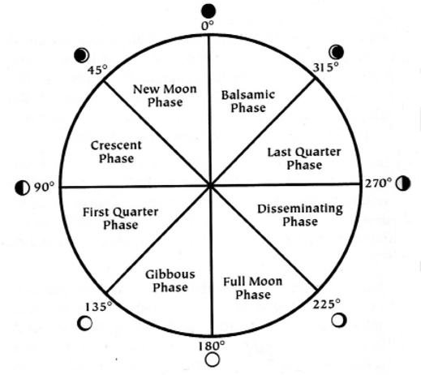
Figure 2-1 Lunar Phases
With an Ephemeris in hand one can easily track Moon phases for a given month. The illustration in Figure 2-2 depicts a page taken from the New American Ephemeris for the 21st Century. The arrow in the image points to the section of the page that provides Moon data for the month in question (December 2012). In this example, one can see the New Moon will occur on December 13 and the Full Moon will occur on December 28 which also happens to be an eclipse date.
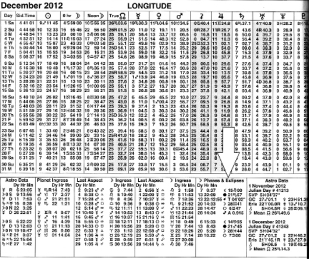
Figure 2-2 Lunar Data in an Ephemeris
To help you quickly identify lunar dates, Appendix A presents New Moon, Full Moon and Eclipse data for 2013 and 2014.
Full Moon, New Moon and the First Trade Date
The Moon has the greatest impact on those stocks that began trading for the very first time (the first trade date) on a financial exchange during a Full Moon or a New Moon. Appendix F lists first trade dates for the 60 largest stocks on the Toronto Stock Exchange and the 30 Dow Jones Industrial Index components. For a more complete listing of first trade dates, see the website www.investingsuccess.ca and look for the tab called Astrology. This tab contains a sub-section called First Trade Dates. Once a stock’s first trade date is known, look up that date in an Ephemeris and see whether it coincides with either a Full or a New Moon. If the first trade date aligns with a New or Full Moon, then that stock is a good candidate for a lunar trading strategy.
Consider the example of Teck Resources which trades on the Toronto Stock Exchange under the ticker TSX:TCK/b. Teck Resources is a large global coal, iron ore and base metal miner with headquarters in Canada. Teck Resources made its debut onto the Toronto Stock Exchange on March 25, 1952, the date of a New Moon. The daily chart in Figure 2-3 illustrates the price action of Teck Resources for the 12 month period commencing September 2011. Dark shaded arrows denote New Moons while un-shaded arrows denote Full Moons.
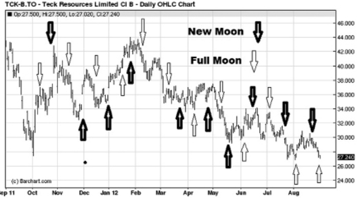
Figure 2-3 Teck Resources (TSX:TCK/b) daily chart
Note how New Moon and Full Moon dates align very closely with swings in price action. These lunar dates obviously do not account for 100% of all the price swings on the chart as there is only one New Moon and one Full Moon event each month. But the correlation between price inflection points and lunar events is uncanny nonetheless. Thus, when watching price action of Teck Resources, as a New Moon or Full Moon date draws near one should use technical chart analysis on short term charts to identify signs of a trend reversal that offers a short term trading opportunity.
Another example of this dynamic can be seen with Alliance Grain Traders which trades on the Toronto Stock Exchange under the ticker TSX:AGT. Alliance Grain Traders is a commodity trading firm based in western Canada specializing in brokering sales of cleaned and packaged peas, beans, lentils and chickpeas to the global marketplace. Alliance Grain Traders made its debut on the Toronto Stock Exchange September 18, 2009, a New Moon. The daily chart in Figure 2-4 illustrates the price action of Alliance Grain Traders for the 12 month period commencing September 2011. Dark shaded arrows denote New Moons while un-shaded arrows denote Full Moons.
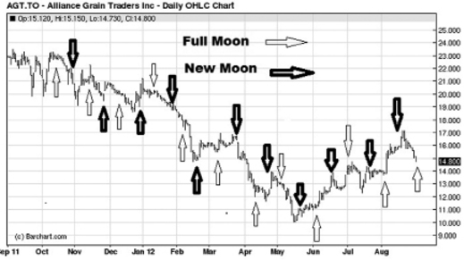
Figure 2-4 Alliance Grain Traders (TSX:AGT) daily chart
Note how New Moon and Full Moon dates align very closely with swings in price action.
As these two examples illustrate, the Moon can have powerful effects on price action. The scientific explanation for this is deeper and more mysterious than I can explain. Thus, I simply use lunar occurrences as a compliment to my more mundane technical chart indicators.
In summary, to incorporate lunar phenomena into a trading strategy, one should identify companies that first traded on a New or a Full Moon date. Then, knowing that a Full Moon or New Moon date is approaching, use technical chart analysis with short term charts to watch for oversold or overbought conditions that may warrant a trade. Compiling a short list of trading candidates that had their first trade dates on a New or Full Moon will take some effort. To help you get started, Table 2-1 presents some Canadian and US listed companies.
|
Company |
Ticker Symbol |
First Trade Date |
Lunar Influence |
|
Central Fund |
TSX: CEF.a |
June 14, 1965 |
Full Moon |
|
Corby |
TSX: CDL.a |
February 3, 1969 |
Full Moon |
|
Cdn. Western Bank |
TSX: CWB |
May 14, 1984 |
Full Moon |
|
Calian Technology |
TSX: CTY |
September 15, 1993 |
New Moon |
|
Cinram |
TSX: CRW.un |
March 10, 1986 |
New Moon |
|
Mullen Group |
TSX: MTL |
December 13, 1993 |
New Moon |
|
Manulife |
TSX: MFC |
September 24, 1999 |
Full Moon |
|
Pan Am Silver |
TSX:PAA |
October 9, 1984 |
Full Moon |
|
Power Corp |
TSX: PWF |
October 10, 1984 |
Full Moon |
|
Toromont |
TSX: TIH |
May 21, 1974 |
New Moon |
|
West Fraser |
TSX: WFT |
May 7, 1986 |
New Moon |
|
WestJet |
TSX:WJA |
July 12, 1999 |
New Moon |
|
American Express |
N: AXP |
May 18, 1977 |
New Moon |
|
Caterpillar |
N:CAT |
December 21, 1929 |
New Moon |
|
Citigroup |
N:C |
December 4, 1998 |
Full Moon |
|
Duke Energy |
N:DUK |
July 12, 1961 |
New Moon |
|
Fed Ex |
N:FDX |
December 28, 1978 |
New Moon |
|
General Electric |
N: GE |
May 27, 1956 |
Full Moon |
|
Honeywell |
N:HUN |
September 19,1929 |
Full Moon |
|
JP Morgan |
N:JPM |
April 1, 1969 |
Full Moon |
|
Lockheed Martin |
N:LMT |
March 16, 1995 |
Full Moon |
|
Merck |
N: MRK |
May 15, 1946 |
Full Moon |
|
Nabors |
N:NBR |
November 3, 2005 |
New Moon |
|
Tyson Foods |
N:TSN |
October 17, 1997 |
Full Moon |
Table 2-1 Lunar first trade dates for several Canadian
and US listed companies
Apogee and Perigee
Because of the Moon’s slightly elliptical pattern of rotation around the Earth, there will be times when it is far from Earth and there will be times when it is close to Earth. The time when the Moon is farthest from Earth is called apogee. The time when the Moon is closest to Earth is called perigee.
New Zealand author Ken Ring in his book Lunar Code describes apogee and perigee in considerable detail. The following are some of his observations:
• Many, but not all, of the most severe global events occur within a few days of perigee.
• Fishing is good just before perigee, hopeless right on perigee and good again just after.
• Students seem to do better in exams when the Moon is in perigee, Full or New.
• If a First Quarter Moon coincides with a perigee, hurricanes are probable.
• When the summer Full Moon is in perigee or apogee, very warm temperatures may result.
• Perigee was always known and feared by ancient sailors because of the stormy weather and gales that invariably arrived. By far the greater number of cyclones, hurricanes, typhoons, volcanic eruptions, floods, heat waves and earthquakes in recorded history has been associated with a perigee or apogee.
• The apogee and perigee of the Moon have an effect on the tides on Earth. When the Moon is at apogee (the furthest distance from the Earth), it has less gravitational pull which contributes to lower tides or lower variation in the high/low tide level. When the Moon is at perigee (closer to the Earth), there is much more gravitational pull which contributes to the opposite effect: higher tides or greater variation in the high and low tide.
To further illustrate the effects of apogee and perigee, consider again the charts of Teck Resources and Alliance Grain Traders.
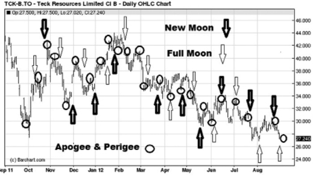
Figure 2-5 Teck Resources (TSX:TCK/b) apogee and perigee
The chart in Figure 2-5 is the same as the chart in Figure 2-3, but with apogee and perigee events overlaid as depicted by small circles. Notice how these apogee and perigee events tend to align themselves very closely with shorter swing changes in trend.
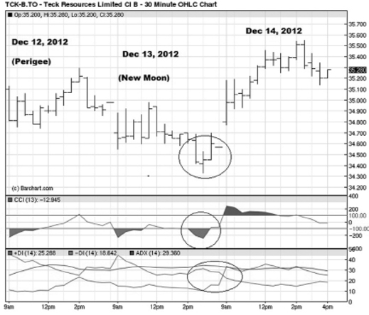
Figure 2-6 Teck Resources 30 minute chart
Shorter term charts function very well to focus on lunar events. Figure 2-6 illustrates a short term 30 minute chart for Teck Resources for the period December 12 through 14, 2012. On December 12, the Moon was at perigee and December 13 marked a New Moon. Note how at perigee price action reached a short term top and then proceeded to decline into a short term swing bottom the next day at the New Moon. A short term trader could have used technical indicators such as RSI, DMI and CCI in conjunction with these lunar events to time a trading entry into the stock.
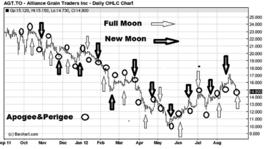
Figure 2-7 Alliance Grain Traders apogee and perigee
The chart in Figure 2-7 is the same as the chart in Figure 2-4, but with apogee and perigee events overlaid as depicted by small circles. Notice how these apogee and perigee events tend to align themselves very closely with shorter swing changes in trend.
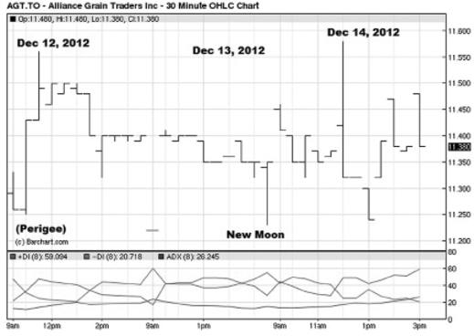
Figure 2-8 Alliance Grain Traders 30 minute chart
The chart in Figure 2-8 illustrates the 30 minute chart for Alliance Grain Traders for the period December 12, 2012 through December 14, 2012. Prior to this time span, the trend on Alliance Grain Traders had been decidedly down having fallen from above the $16 per share level over 3 months. A trader seeking to take a position in Alliance Grain Traders could have watched the price action start to bottom coming into December and then further used the above 30 minute chart as perigee and New Moon events drew close to time a suitable entry into the stock.
For stocks having a first trade date falling at or very near a New Moon or Full Moon, use technical chart analysis and short term charts to watch for tradable events at New Moons, Full Moons, apogee or perigee events.
The North Node of Moon
As previously noted the Earth orbits the Sun in a plane called the ecliptic. The Moon orbits the Earth in its own plane. Mathematically, two planes that are not parallel must intersect. The intersection points between the Moon’s lunar plane and Earth’s ecliptic are termed the North and South nodes. Astrologers tend to focus on the North node and ephemeris tables clearly list the zodiacal position of the North Node for each calendar day.
Study the North Node positions and you will see that it moves in a backwards, retrograde pattern. The length of time for the North Node to make a full journey through the 12 signs of the zodiac is 18.6 years. As part of a trading or investing strategy, consider noting the times when the North Node changes signs of the zodiac, approximately every 1.55 years. The chart in Figure 2-9 illustrates monthly price behaviour of the S&P 500 Index dating back to 1998. On the chart, the circled areas depict the times when the North Node changed signs of the zodiac. Note how these times of sign change align closely with pivotal swing highs and lows including the market peak in 2000 and the peak that preceded the financial crisis of 2008. Definitely times for traders and investors to be alert. The North Node moved into the sign of Scorpio on August 29, 2012 and several weeks later the S&P 500 Index crested and began to decline as debates over the US ‘fiscal cliff’ intensified. The North Node will remain in the sign of Scorpio until February 2014.
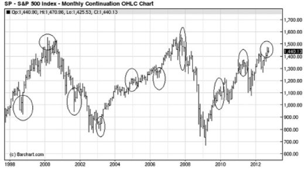
Figure 2-9 S&P 500 Index—North Node changing signs
Watch major market indices for trend changes as the North Node of Moon changes signs of the Zodiac every 1.55 years.
Solar and Lunar Eclipses
A solar eclipse occurs when the Moon passes between the Sun and Earth and fully or partially blocks the Sun. This can happen only at a New Moon, when the Sun and the Moon are in conjunction and only when the New Moon occurs close to one of the Nodes. Because the Moon’s lunar orbit plane intersects with the ecliptic plane at the two Nodes that are 180 degrees apart, New Moons occur close to the nodes at two periods of the year approximately six months (173.3 days) apart, known as eclipse seasons. There will always be at least one solar eclipse during an eclipse season. Sometimes the New Moon occurs close enough to a node during each of two consecutive months to eclipse the Sun in two partial eclipses. This means that in any given year, there will always be at least two solar eclipses, but there could be as many as five.
A lunar eclipse occurs when the Sun, Earth, and Moon are aligned exactly, or very closely so, with the Earth in the middle. The Earth blocks the Sun’s rays from striking the Moon. This can only happen at a Full Moon. Eclipse dates should be watched closely as price trend changes often occur at these dates. The chart in Figure 2-10 illustrates monthly price behaviour of the S&P 500 futures dating back 15 years. The circles on the chart depict many of the solar and lunar eclipse dates. Notice how these dates align quite well with swings in price action. Appendix A provides eclipse data for 2013 through 2014. Using technical chart analysis, watch as eclipse dates approach. If you see oversold or overbought conditions that could lend themselves to a trend reversal, be prepared to take action accordingly.
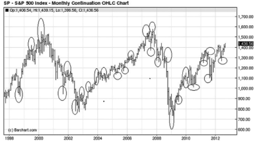
Figure 2-10 S&P 500 Index—Solar and Lunar eclipses
The chart illustrated in Figure 2-11 is an hourly snapshot of the Dow Jones Industrial Average around the time frame of June 4, 2012, the date of a partial lunar eclipse and the date of a market swing low. A trader seeking to enter a trade on Dow futures could have watched the developing technical negative divergence and the rising ADX feature to time an entry position.
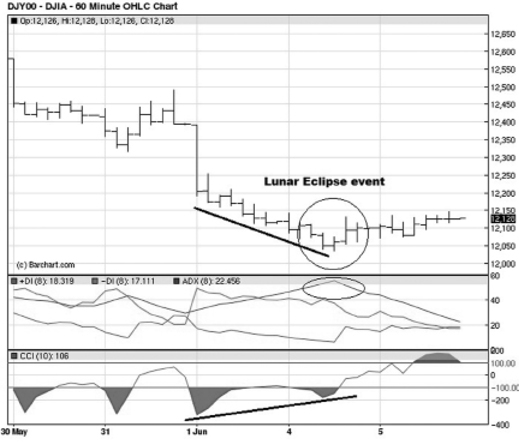
Figure 2-11 Dow Jones Industrial Average hourly
chart June 4, 2012
On a similar note, the chart in Figure 2-12 illustrates the Dow Jones Industrial Average around the period of November 13, 2012 the date of a solar eclipse and a swing high point on price action.
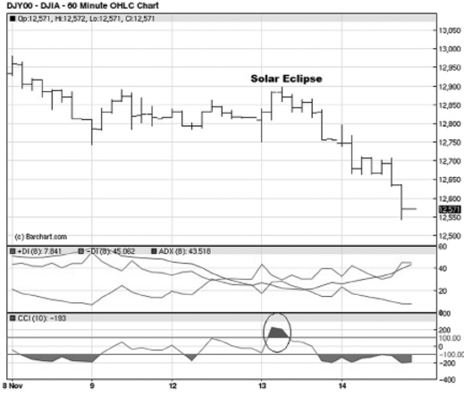
Figure 2-12 Dow Jones Industrial Average hourly chart November 13, 2012
Watch major market indices to exhibit trend changes during solar and lunar eclipse events.
Next, let us turn our attention to an examination of how planetary astrology can be incorporated into a trading strategy.